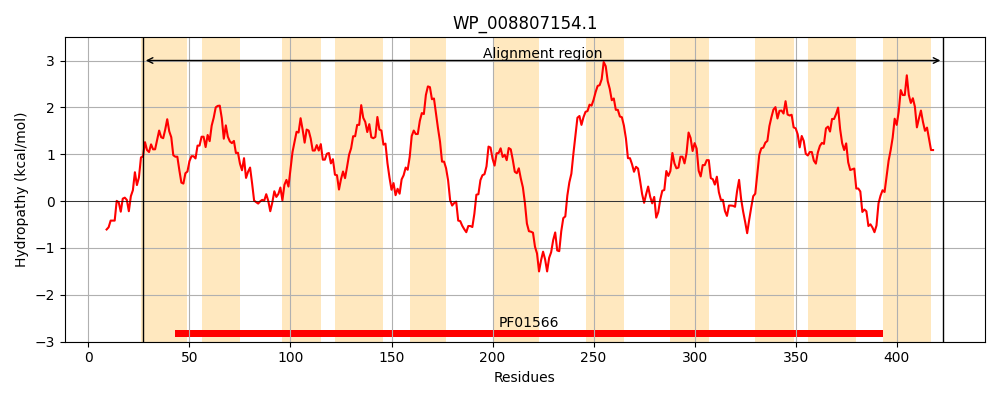
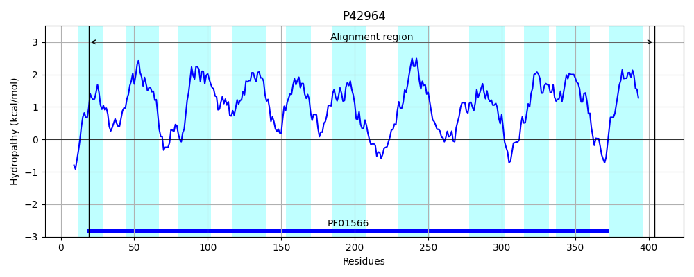
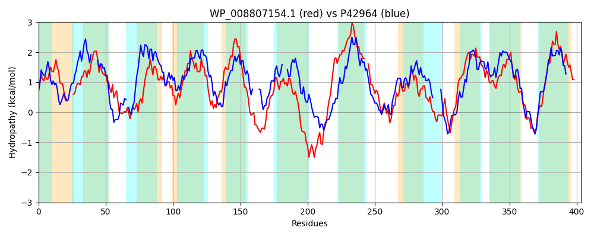

Hit Accession: P42964
Hit TCID: 2.A.55.3.2
Hit Description: gnl|BL_ORD_ID|10492 gnl|TC-DB|P42964|2.A.55.3.2 Hypothetical protein ycsG - Bacillus subtilis.
Mach Len: 403
e:0.000000
Query TMS Count : 11
Hit TMS Count: 11
TMS-Overlap Score: 8.900000
Predicted Substrates:None
BLAST Alignment:
Score: 197 , Bit scores: 80 bits, E-value: 1.6e-16, Alignment length: 403, Percentage identity: 22
Query: 27 IGPGIVLTGVVVGPGAITTASM----LGADYGYSLLWLLIPIAFMGITFMLTTYRISMLTGMPSIEAIRHYYGKVASGFVGGATFLACLFFTMGNISGTGAGMNLVFGIDWKLGALIMIAVMIYCYFSKGVYSKVEKGITICIVAMIIAFYITLVGTGGPDWKASGEGLTHWMFPAGSLVTALGFISTNASLTTGIYGTYLGKEKKWKKDDLFNGVMVADTVAHIIGVLLISGAIILVGAIVL--FPQGISINTPTQLADLLTPSMGRAAKYIMGVALLGAGFSSLLGNTQRGVVLLNSGFNKSTALESKAVQWGSMVVLVVAGLICFSFGGSPVQLIYLANVATAVSTPVAGLFICLLLWRKDINKGYKAPRLLQICMAISYLFCLLLTLVALINTLPKFMS 423
+G ++ +GPG +T + L A +G+ +L +I + I +RI ++G E I + F+ L L F +GNI G G G+ ++FGI + GALI + I + K +++ I MII T P G+ + + P + A I T T G Y T+ G + + T + ++G+L+ S I + VL +G+ I+ A + + G I G+ + A +S++G V F K+ + + + G ++ +V + F G P +++ L + P+A + + ++K+I YK P L A+ + ++ + L LP+ S
Sbjct: 19 MGAAFLMATSAIGPGFLTQTATFTNTLAASFGFVILISII----LDIFAQTNVWRIIAVSGKRGQE-IANMVLPGLGYFIAILVVLGGLAFNIGNIGGAGLGLQVLFGITPETGALISAVIAILIFVIKEAGKAMDRFTQIAGFVMIILTVYVAATTAPP----VGQAVANTFVPEHISIFA---IVTLVGGTVGGYITFAGGHRLLDAGIKGKESIPQVTKSSVVGILITSVMRIALFLAVLGVVSKGLHIDESNPAASVFKLAAGNVGYKIFGLIMWSAAITSVIGAAYTSV-----SFFKTFSPKIEKNSRGIIIGFIVVSTLAFVTIGQPAKILVLVGSLNGLILPIALGTLLVAAYKKNIVGDYKHPLWLTSTGALVVIVMAVMGIYTLCTQLPQLWS 404 | Protein Hydropathy Plots: |
|---|
|  |  |
Pairwise Alignment-Hydropathy Plot:
|
|---|
|  |